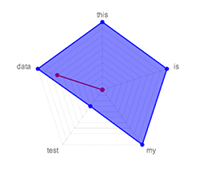

 |
Community Participation Analysis of IdeaScale.comIdeaScale.com is a crowdsourcing platform used by several government agencies to solicit feedback from citizens and employees. These charts cull data from an example community via the IdeaScale API, then run analysis on that data using various chart types. The Github repository for this project may be found at github.com/josephmosby/ideascaleviz. |
Experiments in Drawing with Raphael.jsThis was a fun project, experimenting with the capabilities of Raphael.js. The Github repository for this project may be found at github.com/josephmosby/raphdrawings. |
|
JS Countdown ClockA clock, counting down to an arbitrary date (set in the source code) that shows countdown meters by days, hours, minutes, and seconds. The Github repository for this project may be found at github.com/josephmosby/jscountdown. |